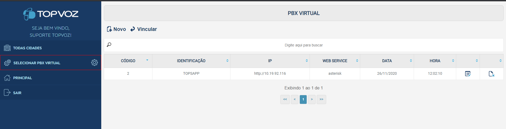

Para que toda as configurações dentro do modulo possam ser possíveis é preciso criar e adicionar um PBX.
O PBX consiste em criar configurações virtuais e envia-las ao ASTERISK para que o ASTERISK faça o reconhecimento e gerenciamento dos dados.
Cada novo dado criado dentro do modulo TOPVOZ é feito o armazenamento das informações e após aplica-las essas informações são enviadas para o ASTERISK por meio de um WEB Service que deve ser criado na configuração inicial.
